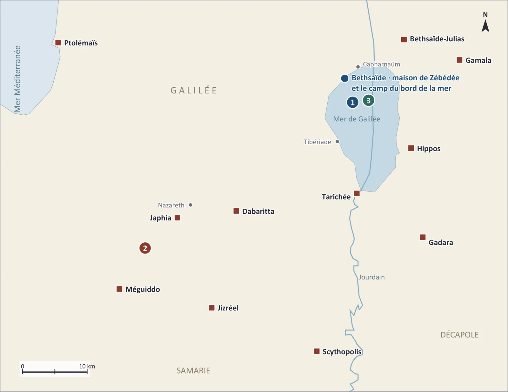
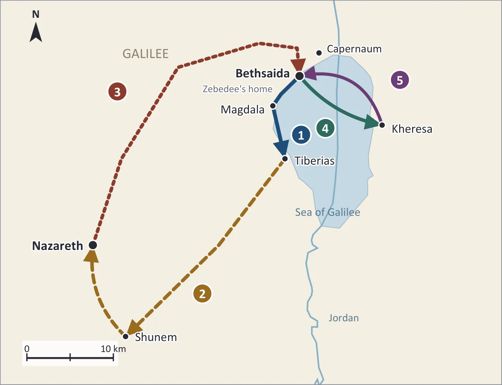

Partie IV Le déroulement du ministère public
Fascicules 148–151
Fascicule 148La formation d’évangélistes à Bethsaïdemai – octobre de l’an 28
| Évènement | Livre d’Urantia | Bible |
|---|---|---|
| Carte 25Le camp de Zébédée et la deuxième tournée de prédication en Galiléemai – décembre de l’an 28 | ||
| (Introduction)Carte 25-① La maison de Zébédée et le camp du bord de la mer | 148:0.1–5 | Aucun |
| Du 3 mai au 3 octobre de l’an 28, Jésus et les apôtres résidèrent à la maison de Zébédée, à Bethsaïde. Au bord de la mer, un campement de tentes abritant de cinq-cents à quinze-cents personnes fonctionnait sous la direction de David Zébédée, tandis que Pierre avait l’entière responsabilité de l’école des évangélistes. | ||
| 1. Une nouvelle école des prophètes | 148:1.1–4 | Aucun |
| Pierre, Jacques et André sélectionnaient les candidats à l’école des évangélistes, et les élèves enseignaient l’après-midi au peuple, au bord de la mer, ce qu’ils avaient appris le matin. Chaque apôtre enseignait sa propre conception de l’évangile, et la centaine d’évangélistes et plus qui y furent formés fournirent plus tard les éléments parmi lesquels furent choisis les soixante-dix. | ||
| 2. L’hôpital de Bethsaïde | 148:2.1–5 | Aucun |
| Elman, le médecin syrien, assisté de vingt-cinq jeunes femmes et de douze hommes, dirigea pendant quatre mois le premier hôpital du royaume. Jésus visitait les malades au moins trois fois par semaine, et pourtant, parmi le millier de personnes qui s’y rétablirent, pas un seul miracle surnaturel ne fut accompli. | ||
| 3. Les affaires du Père | 148:3.1–5 | Aucun |
| Durant cette période, Jésus partait souvent dans les collines avec seulement deux apôtres et restait beaucoup seul, disant qu’il était « occupé aux affaires du Père ». Les rapporteurs en déduisent que, dans ces moments de solitude, il dirigeait un grand nombre de ses principaux directeurs des affaires de l’univers. | ||
| 4. Le mal, le péché et l’iniquité | 148:4.1–11 | Aucun |
| Au cours d’un entretien privé dans le jardin de Zébédée, Thomas interrogea Jésus sur le mal, et Jésus distingua le mal, le péché et l’iniquité selon le degré de transgression de la volonté du Père. Il enseigna que l’homme n’est pas un être déchu, mais un être qui s’élève vers Dieu, et que le fait d’être exposé au mal ne fait pas de quelqu’un un pécheur. | ||
| 5. Le but de l’affliction | 148:5.1–5 | Aucun |
| Lorsque Nathanael demanda pourquoi le Père permet que ses enfants souffrent, Jésus expliqua que des traitres rebelles avaient bouleversé l’ordre naturel de ce monde. Le Père n’afflige pas délibérément ses enfants, enseigna-t-il, et beaucoup d’afflictions sont produites par le péché et l’iniquité. | ||
| 6. Le malentendu sur la soufrance —discours sur Job | 148:6.1–12 | Aucun |
| Ce même soir, Jean demanda pourquoi des innocents souffrent, et Jésus exposa l’histoire de Job, en montrant les idées erronées sur Dieu de ses trois amis. La souffrance humaine n’est pas une manifestation du jugement divin, dit-il, et Job trouva par la foi un Dieu de réconfort et de salut. | ||
| 7. L’homme à la main desséchée | 148:7.1–4 | Mt 12:9-14; Mc 3:1-6; Lc 6:6-11 |
| Le deuxième sabbat avant la deuxième tournée de prédication, Jésus prit la parole dans la synagogue de Capharnaüm, puis guérit un homme à la main desséchée que le chef des espions pharisiens lui avait envoyé. Ce fut son premier miracle accompli en réponse au défi de ses ennemis ; les pharisiens allèrent trouver Hérode à Tibériade, mais Hérode refusa d’agir.Diffère de la BibleLes Évangiles disent que les pharisiens tinrent conseil pour faire périr Jésus, tandis que le Livre d’Urantia ajoute que le chef des espions avait incité l’homme à venir, qu’Hérode refusa d’agir et que l’homme était tailleur de pierres. | ||
| 8. La dernière semaine à Bethsaïde | 148:8.1–5 | Aucun |
| Au cours de la dernière semaine à Bethsaïde, Abraham, un jeune membre du sanhédrin, fut baptisé par Abner, ce qui mit Jérusalem en émoi. Kirmeth, un prophète extatique venu de Bagdad, troubla le camp, et Abraham donna tous ses biens terrestres au trésor apostolique, ce qui aida à envoyer les évangélistes en mission. | ||
| 9. La guérison du paralytique | 148:9.1–4 | Mt 9:1-8; Mc 2:1-12; Lc 5:17-26 |
| Le vendredi après-midi 1er octobre, pendant une réunion dans la pièce de devant de la maison de Zébédée, un paralytique de Capharnaüm fut descendu par ses amis avec des cordes à travers les tuiles du toit. Jésus déclara ses péchés pardonnés et lui ordonna de se lever et de marcher, et trois des espions crurent et furent baptisés par Pierre.Diffère de la BibleLes Évangiles situent cet épisode dans une maison de Capharnaüm (Matthieu : « sa propre ville »), tandis que le Livre d’Urantia le place à la maison de Zébédée à Bethsaïde et ajoute que trois espions de Jérusalem furent ensuite baptisés. | ||
Carte 25Le camp de Zébédée et la deuxième tournée de prédication en Galilée
mai – décembre de l’an 28 · Fascicules 148–149

- ①La maison de Zébédée et le camp du bord de la merDu 3 mai au 3 octobre de l’an 28, Jésus et les apôtres résidèrent à la maison de Zébédée, à Bethsaïde. La ville de tentes au bord de la mer comptait de cinq-cents à quinze-cents personnes ; l’école des évangélistes s’y réunissait, et à peu de distance au sud du camp se trouvait l’infirmerie d’Elman. [148:0.1; 148:1.1; 148:2.1]
- ②La deuxième tournée de prédication publique en GaliléeDu dimanche 3 octobre au 30 décembre. Les douze apôtres et le corps nouvellement recruté de 117 évangélistes travaillèrent par groupes, tandis que Jésus, avec Jacques et Jean, visitait souvent deux villes en un jour pour les encourager. Les carrés indiquent les villes que le texte nomme ; il ne donne ni ordre ni itinéraire. [149:0.1–3]
- ③Rassemblement à la maison de ZébédéeDavid Zébédée tenait le quartier général à Bethsaïde et envoyait des messagers. À l’heure du souper, le jeudi pluvieux 30 décembre, tous les apôtres et évangélistes étaient arrivés à la maison de Zébédée. [149:0.4; 149:7.1]
Fascicule 149La deuxième tournée de prédicationoctobre – décembre de l’an 28
| Évènement | Livre d’Urantia | Bible |
|---|---|---|
| (Introduction)Carte 25-② La deuxième tournée de prédication publique en GaliléeCarte 25-③ Rassemblement à la maison de Zébédée | 149:0.1–4 | Aucun |
| La deuxième tournée de prédication publique en Galilée commença le dimanche 3 octobre de l’an 28 et se termina le 30 décembre. Jésus n’emmena que Jacques et Jean avec lui et supervisa les 117 nouveaux évangélistes, tandis que David Zébédée maintenait à Bethsaïde le quartier général de son service de messagers. | ||
| 1. La grande renommée de Jésus | 149:1.1–9 | Mt 4:23-25; 12:15-21; Mc 3:7-12; Lc 6:17-19 |
| Au moment où le camp de Bethsaïde fut levé, la renommée de Jésus comme guérisseur s’était répandue dans toute la Palestine et la Syrie. Au cours de cette tournée, il n’accomplit délibérément aucun miracle, et pourtant plus d’une centaine de personnes furent guéries à son insu, ce que les rapporteurs attribuent à l’action conjuguée de la foi, de sa compassion et de la volonté du Père.Diffère de la BibleLes Évangiles disent que Jésus guérit tous les malades, tandis que le Livre d’Urantia explique qu’au cours de cette tournée il ne guérit pas intentionnellement, et que les guérisons se produisirent par la foi sans que Jésus en soit conscient. | ||
| 2. L’attitude du peuple | 149:2.1–14 | Aucun |
| Le rapporteur note comment les enseignements de Jésus furent plus tard recouverts par la doctrine de l’expiation et par une théologie centrée sur sa personne. Jésus était exempt de superstition, désigna des femmes comme éducatrices de l’évangile et, en évolutionniste progressiste plutôt qu’en révolutionnaire militant, gagna la confiance et l’amour des gens. | ||
| 3. L’hostilité des chefs religieux | 149:3.1–3 | Aucun |
| Les gens du peuple accueillirent Jésus, mais les chefs religieux de Jérusalem devinrent plus hostiles après la conversion d’Abraham et la défection des trois espions. Les pharisiens avaient une théologie systématique, tandis que Jésus enseignait par paraboles, et à partir de ce moment les dirigeants ne cessèrent jamais de comploter sa mort. | ||
| 4. Déroulement de la tournée de prédication | 149:4.1–6 | Aucun |
| Au cours de la tournée, Jésus tint des cours du soir avec les croyants de nombreuses villes. Quand un jeune évangéliste l’interrogea sur la colère, il dit qu’elle est le signe que la nature spirituelle n’a pas réussi à maitriser le mental et le corps, et il enseigna l’équilibre du caractère, montrant que les vertus poussées à l’extrême deviennent des vices. | ||
| 5. Leçon sur le contentement | 149:5.1–5 | Aucun |
| Lors d’une conférence du soir des évangélistes travaillant sous la direction de Simon Zélotès, Simon posa une question sur le contentement. Jésus enseigna que le bonheur dépend beaucoup de la volonté que l’on a d’être conduit par l’esprit intérieur, et les exhorta à rechercher l’assurance de la foi et les certitudes de la filiation divine. | ||
| 6. La « crainte du Seigneur » | 149:6.1–12 | Aucun |
| Lors d’une conférence du soir à Gamala, Philippe demanda comment concilier l’appel de l’Écriture à craindre le Seigneur avec l’enseignement de Jésus. Jésus répondit que les hommes doivent passer de la crainte à l’amour en passant par le respect, et adorer Dieu non comme un roi puissant qu’il faut craindre, mais comme un Père miséricordieux. | ||
| 7. Retour à Bethsaïde | 149:7.1–3 | Aucun |
| Sur les instructions d’André, tous les groupes de prédication revinrent à la maison de Zébédée à Bethsaïde au plus tard le jeudi 30 décembre. Le groupe obtint deux semaines de repos, et sur les 117 évangélistes, seuls soixante-quinze environ avaient surmonté l’épreuve de l’expérience et étaient prêts à poursuivre leur service. | ||
Fascicule 150La troisième tournée de prédicationjanvier – mars de l’an 29
| Évènement | Livre d’Urantia | Bible |
|---|---|---|
| Carte 26La troisième tournée de prédication et la visite à Nazarethjanvier – mars de l’an 29 | ||
| Le départ pour la troisième tournée de prédicationCarte 26-① De Bethsaïde pour la troisième tournée de prédication | 150:0.1–4 | Mt 9:35; Mc 6:6 |
| En janvier de l’an 29, Abner et les apôtres de Jean tinrent une conférence commune avec les apôtres de Jésus à Bethsaïde, mais Jésus refusa de prendre part à la discussion sur l’onction des malades. Le mardi 18 janvier, les vingt-quatre rejoignirent environ soixante-quinze évangélistes pour la troisième tournée de prédication en Galilée, qui dura sept semaines.Diffère de la BibleLes Évangiles disent seulement que Jésus parcourait toutes les villes et tous les villages, tandis que le Livre d’Urantia précise que les évangélistes partirent par groupes de cinq et que les associés d’Abner travaillèrent avec eux pendant près de trois semaines. | ||
| 1. Le groupe des femmes évangélistes | 150:1.1–3 | Lc 8:1-3 |
| Le soir du 16 janvier, Jésus annonça que dix femmes seraient mises à part pour le ministère du royaume. Les dix, parmi lesquelles Suzanne, Jeanne la femme de Chuza, Marthe et Rachel, furent désignées et élurent Suzanne comme chef et Jeanne comme trésorière ; Marie-Madeleine et Rébecca furent ajoutées plus tard.Diffère de la BibleL’Évangile de Luc dit seulement que des femmes assistaient Jésus de leurs biens, tandis que le Livre d’Urantia dit que Jésus mit officiellement à part dix femmes comme éducatrices de l’évangile, et donne le nom des dix ainsi que leur organisation. | ||
| 2. L’arrêt à Magdala | 150:2.1–3 | Aucun |
| Le corps évangélique féminin prouva pour la première fois son utilité à Magdala, en entrant dans des lieux de perdition où les apôtres pouvaient difficilement aller. Grâce au travail de Marthe et de Rachel, Marie-Madeleine, qui vivait alors dans une maison mal famée, crut et fut baptisée par Pierre, et environ quatre semaines plus tard elle fut mise à part à Jotapata. | ||
| 3. Un sabbat à Tibériade | 150:3.1–12 | Aucun |
| À Tibériade, les femmes dirigèrent l’office du sabbat du groupe apostolique, Jeanne le présidant dans la salle des banquets du nouveau palais d’Hérode. Ce soir-là, répondant à la question d’André sur une nouvelle étoile, Jésus rejeta toute superstition, y compris l’astrologie, les amulettes, la divination, l’interprétation des rêves et les idoles. | ||
| 4. L’envoi des apôtres deux par deux | 150:4.1–4 | Mt 9:36-38; 10:1-42; 11:1; Mc 6:7-13; Lc 9:1-6; 12:2-9 |
| Le lendemain soir, Jésus dit que la moisson était abondante, mais les ouvriers peu nombreux, et il envoya les douze deux par deux à travers toute la Galilée. Ils ne devaient aller ni dans les villes des Gentils ni en Samarie, mais vers les brebis perdues de la maison d’Israël, et ils se retrouveraient à Nazareth.Diffère de la BibleLes Évangiles disent que Jésus donna le pouvoir de chasser les esprits impurs et de guérir, avec des instructions sur ce qu’il fallait emporter, tandis que le Livre d’Urantia ne mentionne ni ce don de pouvoir ni ces instructions, et énumère les paires d’apôtres. | ||
| Deux passereaux | 150:4.3 | Mt 10:29-31; Lc 12:6-7 |
| Jésus les encouragea en leur disant que pas même deux passereaux ne sont oubliés de Dieu et que les cheveux de leur tête sont comptés, si bien qu’ils n’ont rien à craindre. Puisque le rejet de l’évangile diviserait les foyers, ils devaient s’efforcer de sauver des familles entières ; mais celui qui aime ses parents plus que l’évangile n’est pas digne du royaume.Diffère de la BibleMatthieu dit que Jésus est venu apporter non la paix, mais l’épée, tandis que le Livre d’Urantia dit qu’il est venu apporter la paix, que la division survient lorsqu’elle est rejetée, et exhorte à sauver la famille entière. | ||
| 5. Que dois-je faire pour être sauvé ?Carte 26-② Par Sunem à Nazareth | 150:5.1–5 | Aucun |
| À Sunem, Rachel demanda comment répondre aux femmes qui demandent ce qu’elles doivent faire pour être sauvées, et Jésus dit : croire l’évangile et accepter le pardon divin. Le salut est le don de Dieu, enseigna-t-il, et la vie droite est le fruit de la vie de filiation née de l’esprit. | ||
| 6. Les leçons du soir | 150:6.1–3 | Aucun |
| Pendant le reste de la tournée, Jésus passa d’un groupe à l’autre, parlant chaque soir de sujets tels que l’amour de Dieu, les rêves et les visions, l’humilité et la douceur. Tous les groupes se rassemblèrent le vendredi 4 mars dans un campement sur les hautes terres au nord de Nazareth. | ||
| 7. Le séjour à Nazareth | 150:7.1–4 | Aucun |
| Le vendredi après-midi 4 mars, Jésus se promena dans Nazareth sans être reconnu de personne, passant devant la maison de son enfance, l’atelier de charpentier, la colline et la synagogue. Les gens de Nazareth lui en voulaient de n’avoir accompli aucune grande œuvre dans sa ville natale, et ses ennemis avaient engagé des hommes grossiers pour semer le trouble lors de l’office du sabbat. | ||
| 8. L’office du sabbatCarte 6-④ La synagogueCarte 26-③ Rejeté à Nazareth, retour à Bethsaïde | 150:8.1–11 | Mt 13:54-58; Mc 6:1-6; Lc 4:16-30 |
| Le matin du sabbat, l’office de la synagogue de Nazareth fut célébré selon l’ancienne manière, et Jésus lut des passages du Deutéronome et d’Isaïe dans le rouleau qu’il avait lui-même offert autrefois. Il déclara : « Aujourd’hui, ces Écritures sont accomplies », parla pendant près de quinze minutes des fils et des filles de Dieu, puis descendit au milieu de la foule qui l’interrogeait.Diffère de la BibleL’Évangile de Luc dit que Jésus lut seulement Isaïe, tandis que le Livre d’Urantia dit qu’il lut d’abord le Deutéronome, qu’il parla des fils et des filles de Dieu et que des hommes payés cherchèrent à provoquer des troubles. | ||
| 9. Le rejet par Nazareth | 150:9.1–5 | Mt 13:54-58; Mc 6:1-6; Lc 4:16-30 |
| Quand ses ennemis se moquèrent de lui, Jésus répondit qu’un prophète n’est pas honoré dans son propre pays. La bévue belliqueuse de Simon Zélotès excita la foule, qui tenta de pousser Jésus du haut d’une falaise, mais, quand il se retourna et lui fit face, les bras croisés, la foule s’écarta. Le groupe se retrouva à Bethsaïde le 10 mars.Diffère de la BibleL’Évangile de Luc dit que la foule fut mise en fureur par les histoires d’Élie et d’Élisée, tandis que le Livre d’Urantia omet ces histoires et dit que ce furent la bévue de Simon Zélotès et les hommes payés qui déclenchèrent l’émeute. | ||
Carte 26La troisième tournée de prédication et la visite à Nazareth
janvier – mars de l’an 29 · Fascicules 150–152

- ①De Bethsaïde pour la troisième tournée de prédicationLe mardi 18 janvier de l’an 29, les évangélistes éprouvés rejoignirent les vingt-quatre à la maison de Zébédée pour préparer une mission de sept semaines. Ils visitèrent Magdala, Tibériade, Nazareth ainsi que les villes et villages du centre et du sud de la Galilée. C’est à Magdala que les femmes évangélistes démontrèrent pour la première fois leur utilité. [150:0.3–4; 150:2.2]
- ②Par Sunem à NazarethUn soir à Sunem, après que les apôtres de Jean furent retournés à Hébron, Jésus enseigna. Tous devaient se rassembler à Nazareth le vendredi 4 mars (l’ordre et l’itinéraire des étapes ne sont pas dans le texte ; en tirets). [150:5.1; 150:6.3]
- ③Rejeté à Nazareth, retour à BethsaïdeLe jour du sabbat, il prit la parole dans la synagogue de Nazareth et fut rejeté. Partis le dimanche matin par des routes différentes, ils se retrouvèrent tous à Bethsaïde le jeudi 10 mars à midi. [150:8.1; 150:9.1–5]
- ④De l’autre côté du lac, à KhérésaLors de la traversée, le dimanche soir, ils furent pris dans une soudaine tempête de vent. Le lendemain matin, près du cimetière du village de Khérésa, Amos le lunatique fut guéri. [151:5.1–7; 151:6.2–5]
- ⑤Retour à BethsaïdeAprès une seule nuit de repos, tôt le mardi matin, les Gentils éleveurs de porcs les pressèrent de partir. Débarqué ce mardi dans la matinée, Jésus réveilla la fille de Jaïre. [151:6.7; 152:0.1; 152:1.1–2]
Fascicule 151Séjour et enseignement au bord de la mermars de l’an 29
| Évènement | Livre d’Urantia | Bible |
|---|---|---|
| (Introduction) | 151:0.1–2 | Aucun |
| Le 10 mars, tous les groupes de prédication s’étaient rassemblés à Bethsaïde, et Jésus passa la plus grande partie du sabbat seul dans les collines. Ce samedi soir, il parla pendant plus d’une heure de la mission de l’adversité et de la valeur spirituelle de la déception, encore attristé d’avoir été rejeté à Nazareth. | ||
| 1. La parabole du semeur | 151:1.1–5 | Mt 13:1-17; Mc 4:1-12; Lc 8:4-10 |
| Un dimanche matin, assis dans un vieux bateau de pêche au bord de la mer, Jésus utilisa pour la première fois des paraboles, racontant à une foule d’environ mille personnes l’histoire du semeur. Ce soir-là, Matthieu lui demanda pourquoi il parlait en paraboles, et Jésus répondit que ceux qui désirent la vérité comprendraient, tandis que ses ennemis seraient confondus.Diffère de la BibleLes Évangiles rapportent seulement l’enseignement donné depuis un bateau au bord de la mer, tandis que le Livre d’Urantia dit que c’est alors que Jésus inaugura la méthode des paraboles et que Matthieu posa sa question ce soir-là dans le jardin de Zébédée. | ||
| 2. Interprétation de la parabole | 151:2.1–8 | Mt 13:18-23; Mc 4:13-20; Lc 8:11-15 |
| Pierre et Nathanael interprétèrent différemment la parabole du semeur, attribuant un sens spirituel à chaque détail, et les apôtres se divisèrent en deux camps. Thomas dit qu’une parabole enseigne une seule grande vérité, ici que les résultats du ministère varient selon les conditions, et Jésus reconnut que Thomas en avait discerné le vrai sens.Diffère de la BibleDans les Évangiles, Jésus interprète lui-même la parabole détail par détail, tandis que dans le Livre d’Urantia cette interprétation est celle de Pierre ; Jésus met en garde contre la transformation des paraboles en allégories et approuve le point de vue de Thomas. | ||
| 3. Compléments sur les paraboles | 151:3.1–16 | Mc 4:21-25; Lc 8:16-18 |
| Le lendemain soir, Jésus leur apprit à adapter leur enseignement à leurs auditeurs, parlant de la lampe que l’on place sur un lampadaire, et expliqua comment les paraboles implantent la vérité tout en évitant les préjugés. À la fin, il ajouta, comme dernier élément de la parabole du semeur, l’histoire de la semence qui pousse d’elle-même jusqu’à la moisson.Diffère de la BibleDans les Évangiles, les paroles sur la lampe et sur les choses cachées suivent immédiatement l’interprétation de la parabole, tandis que le Livre d’Urantia les place dans le cours du lendemain soir sur la valeur des paraboles. | ||
| 4. Nouvelles paraboles au bord de la mer | 151:4.1–7 | Mt 13:24-53; Mc 4:26-32; Lc 13:18-21 |
| Le lendemain, Jésus enseigna de nouveau la multitude depuis le bateau, donnant les paraboles du blé et de l’ivraie, du grain de sènevé, du levain, du trésor caché dans un champ, de la perle de grand prix et du filet. Dès lors, il n’enseigna presque plus les foules que par paraboles, les expliquant plus complètement aux apôtres et aux évangélistes lors des cours du soir.Diffère de la BibleMatthieu interprète les paraboles de l’ivraie et du filet comme le jugement à la fin du monde, tandis que le Livre d’Urantia ne donne pas une telle interprétation et présente seulement les paraboles. | ||
| 5. La visite à KhérésaCarte 26-④ De l’autre côté du lac, à Khérésa | 151:5.1–7 | Mt 8:18, 23-27; Mc 4:35-41; Lc 8:22-25 |
| Las des foules, Jésus partit avec ses apôtres de l’autre côté du lac le dimanche après-midi et, le soir venu, une bourrasque soudaine remplit le bateau d’eau, si bien que Pierre le réveilla. Au moment où Jésus disait : « Paix, restez tranquilles », la tempête s’apaisa, ce que les rapporteurs considèrent comme une coïncidence.Diffère de la BibleLes Évangiles disent que Jésus menaça le vent et la mer et les calma, tandis que le Livre d’Urantia dit qu’il s’adressait au mental troublé des apôtres et que la fin de la tempête fut une coïncidence. | ||
| 6. L’aliéné de KhérésaCarte 26-⑤ Retour à Bethsaïde | 151:6.1–8 | Mt 8:28-34; Mc 5:1-20; Lc 8:26-39 |
| Amos, un lunatique qui vivait dans les cavernes funéraires près de Khérésa, tomba aux pieds de Jésus, et Jésus lui dit qu’il n’était pas possédé d’un démon et lui ordonna de sortir de son état, lui rendant la raison. Pendant ce temps, des chiens poussèrent un troupeau de porcs du haut d’un précipice, ce qui donna naissance à la légende selon laquelle les démons étaient entrés dans les porcs, et les villageois demandèrent à Jésus de partir.Diffère de la BibleLes Évangiles disent que les démons entrèrent dans les porcs et que le troupeau périt, tandis que le Livre d’Urantia dit que des chiens se contentèrent de chasser une trentaine de porcs et qu’Amos souffrait d’une affection mentale, et non d’une possession. Matthieu parle de deux hommes. | ||
← Partie III Jean le Baptiste, la préparation et la formation des apôtresPartie V Les derniers mois du ministère public →
Les actes de Jésus dans le Livre d’Urantia — Le Nouveau Testament et le Livre d’Urantia